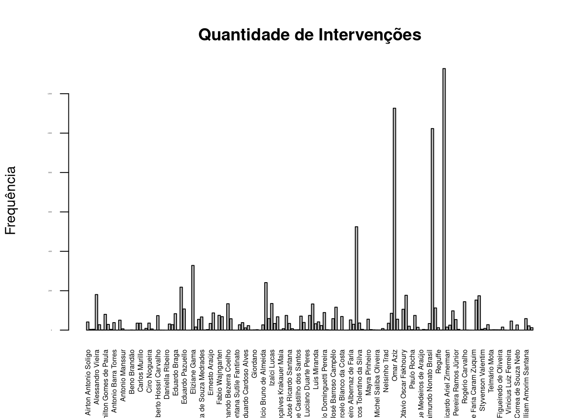
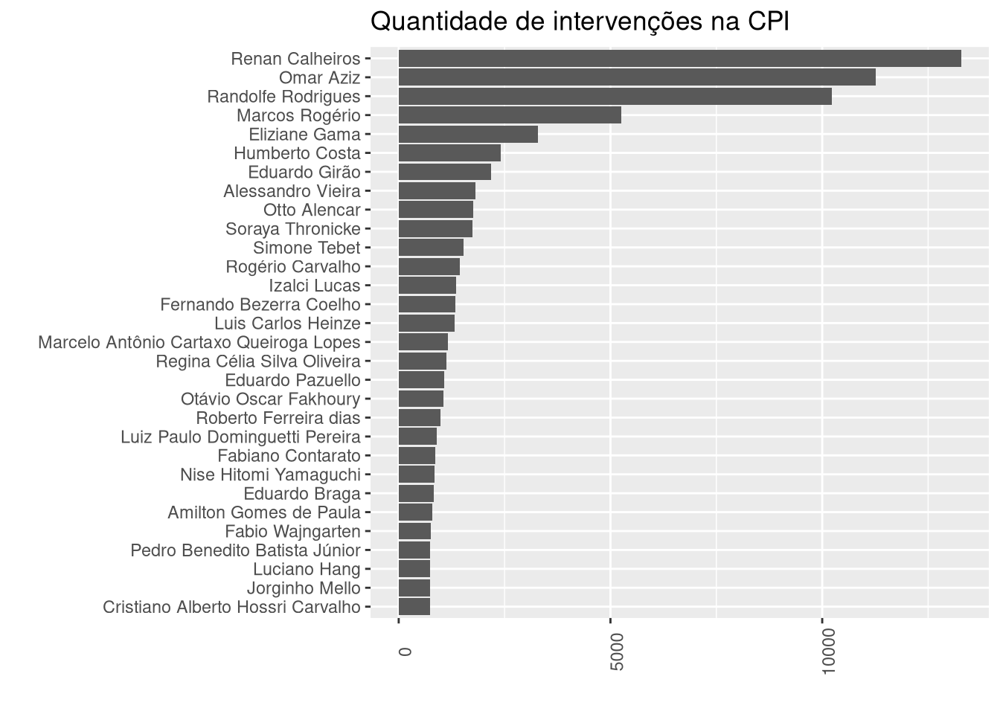

13 Pré-processamento
O pré-processamento de texto é necessário para evitar certas dores de cabeça mediante a padronização dos dados.
13.1 Pré-processamento: substituição de abreviaturas
Nosso primeiro passo no pré-processamento será substituir as abreviaturas mais comuns pelo seu equivalente por extenso. Vamos pegar abreviaturas usando um regex, pegando qualquer palavra que se inicie com maiúsculo e que termine com ponto final. Talvez este não seja o melhor regex para este caso, e teremos vários “falsos positivos”, mas será melhor que buscá-las manualmente, uma a uma lendo todo o texto (precisaríamos de dias para tal). Dali, observamos e montamos nossa tabela de abreviaturas.
abrev <- stringr::str_extract_all(NotasTaq$fala,
"([A-Z][a-z]{0,4}\\. )?([A-Z]+|[A-Z][a-z]{0,4})\\.") |>
unlist() |> sort()
abrev_cont <- abrev |>
# contando com plyr::count temos um dataframe com a frequencia
plyr::count() |>
arrange(desc(freq))
# Vamos observar os termos com maior frequência
head(abrev_cont, 50)
## x freq
## 1 Sr. 12227
## 2 V. Exa. 7453
## 3 V. Sa. 4444
## 4 Dr. 1917
## 5 Dra. 1321
## 6 Sim. 1263
## 7 CPI. 1247
## 8 O. 785
## 9 Srs. 773
## 10 Sra. 720
## 11 Sras. 469
## 12 Isso. 392
## 13 Renan. 379
## 14 Covid. 345
## 15 Paulo. 205
## 16 Dias. 201
## 17 Risos. 197
## 18 S. Exa. 183
## 19 V. Exas. 174
## 20 Claro. 159
## 21 Certo. 157
## 22 Costa. 133
## 23 Bank. 127
## 24 Omar. 127
## 25 Log. 122
## 26 Otto. 115
## 27 China. 105
## 28 S. 105
## 29 Aziz. 103
## 30 Vac. 101
## 31 Braga. 93
## 32 Penal. 88
## 33 Sul. 87
## 34 SUS. 79
## 35 CGU. 76
## 36 Casa. 73
## 37 Ltda. 73
## 38 Tebet. 73
## 39 UTI. 73
## 40 Leila. 72
## 41 Exato. 67
## 42 Eu. 63
## 43 V. 60
## 44 Art. 58
## 45 D. 55
## 46 Secom. 54
## 47 Val. 53
## 48 Nunca. 52
## 49 Mello. 51
## 50 Deus. 50Podemos obter a frequência usando o comando table, mas ao usarmos plyr::count temos mais facilidades, uma vez que temos um dataframe.
Criando um dataframe com termos a serem substituídos. header = true indica que a primeira linha será o cabeçalho, sep="":" indica que usarmos o caracter dois pontos para separa as colunas.
D.subs <- read.table(header=TRUE, sep = ":", text=
'abr:subs
app.:aplicativo
art.:artigo
Cel.:coronel
Dr.:Doutor
Dra.:doutora
Drs.:doutores
Exma.|Ex.ma.:excelentíssima
Exmo.|Ex.mo.:excelentíssimo
Gen.:general
Jr.:Júnior
Mr.:mister
Sgt.:sargento
Sr.:senhor
Sra.:senhora
Sras.:senhoras
Srta.:senhorita
Srs.:senhores
S. Exa.:Sua_Excelência
V. Exa.:vossa_excelência') |>
# para repassar múltiplos argumentos para uma mesma string
# precisamos converter o dataframe para vetor nomeado
tibble::deframe()
# vamos agora substituir as abreviações no dataframe
NotasTaq <- NotasTaq |>
mutate(fala = stringr::str_replace_all(fala, D.subs))Se quisermos olhar os termos no contexto, isto é, as palaras que o circundam, para termos uma noção do uso das abreviações, podemos usar o seguinte código:
termo="O"
stringr::str_extract(NotasTaq$fala, paste0("\\w+.", termo, "\\..\\w+")) |> table()
##
## CEO. Eu FCO. Era FCO. Essa FCO. Se LDO. Não PICO. E SPO. Pois
## 1 1 1 1 1 1 113.2 Primeiras observações
Vamos observar os nomes das pessoas que falaram na CPI:
participantes <- NotasTaq$nome |> unique()
# contando os participantes
length(participantes)
## [1] 153
# vendo os nomes dos participantes, em ordem alfabética
sort(participantes)
## [1] "Airton Antonio Soligo"
## [2] "Alan Diniz Moreira Guedes de Ornelas"
## [3] "Alberto Zacharias Toron"
## [4] "Alessandro Vieira"
## [5] "Alexandre Figueiredo Costa Silva Marques"
## [6] "Alexandre Queiroz"
## [7] "Amilton Gomes de Paula"
## [8] "Andreia da Silva Lima"
## [9] "Angelo Coronel"
## [10] "Antonio Barra Torres"
## [11] "Antonio Carlos Alves de Sá Costa"
## [12] "Antônio Elcio Franco Filho"
## [13] "Antonio Manssur"
## [14] "Aristides Zacarelli"
## [15] "Arquivaldo Bites Leão Leite"
## [16] "Beno Brandão"
## [17] "Bia Kicis"
## [18] "Bruna Mendes dos Santos Morato"
## [19] "Carlos Murillo"
## [20] "Carlos Portinho"
## [21] "Carlos Roberto Wizard Martins"
## [22] "Ciro Nogueira"
## [23] "Cláudio Maierovitch"
## [24] "Cleber Lopes de Oliveira"
## [25] "Cristiano Alberto Hossri Carvalho"
## [26] "Daniel Freitas"
## [27] "Daniel Sampaio"
## [28] "Daniella Ribeiro"
## [29] "Danilo Berndt Trento"
## [30] "Dimas Tadeu Covas"
## [31] "Eduardo Braga"
## [32] "Eduardo de Vilhena Toledo"
## [33] "Eduardo Girão"
## [34] "Eduardo Pazuello"
## [35] "Eliana Maria dias Santiago"
## [36] "Eliane Nogueira"
## [37] "Eliziane Gama"
## [38] "Elton da Silva Chaves"
## [39] "Emanuel Ramalho Catori"
## [40] "Emanuela Batista de Souza Medrades"
## [41] "Emerson Paxá Pinto Oliveira"
## [42] "Eric Furtado Ferreira Borges"
## [43] "Ernesto Araújo"
## [44] "Fabiano Contarato"
## [45] "Fábio Henrique Ming Martini"
## [46] "Fabio Wajngarten"
## [47] "Fausto Vieira dos Santos Junior"
## [48] "Felipe Dantas de Araujo"
## [49] "Fernando Bezerra Coelho"
## [50] "Flávio Bolsonaro"
## [51] "Flavio Correa de Moraes"
## [52] "Francieli Fontana Sutile Fantinato"
## [53] "Francieli Fontana Sutile Tardetti Fantinato"
## [54] "Francisco Araújo Filho"
## [55] "Francisco Eduardo Cardoso Alves"
## [56] "Francisco Emerson Maximiano"
## [57] "Gina Moraes de Almeida"
## [58] "Giordano"
## [59] "Giovanna Gomes Mendes da Silva"
## [60] "Guilherme Cremonesi Caurin"
## [61] "Helcio Bruno de Almeida"
## [62] "Humberto Costa"
## [63] "Ivanildo Gonçalves da Silva"
## [64] "Izalci Lucas"
## [65] "Jailton Batista"
## [66] "Jean Paul Prates"
## [67] "João Carlos Gonçalves Krakauer Maia"
## [68] "Jorge Kajuru"
## [69] "Jorginho Mello"
## [70] "José Ricardo Santana"
## [71] "Jurema Werneck"
## [72] "Kátia Abreu"
## [73] "Katia Shirlene Castilho dos Santos"
## [74] "Leila Barros"
## [75] "Luana Araújo"
## [76] "Luciano Duarte Peres"
## [77] "Luciano Hang"
## [78] "Luis Carlos Heinze"
## [79] "Luis Miranda"
## [80] "Luis Ricardo Fernandes Miranda"
## [81] "Luiz Henrique Mandetta"
## [82] "Luiz Paulo Dominguetti Pereira"
## [83] "Mara Gabrilli"
## [84] "Marcellus Campelo"
## [85] "Marcellus José Barroso Campêlo"
## [86] "Marcelo Antônio Cartaxo Queiroga Lopes"
## [87] "Marcelo Blanco"
## [88] "Marcelo Blanco da Costa"
## [89] "Marcelo Queiroga"
## [90] "Márcio Antonio do Nascimento Silva"
## [91] "Marconny Nunes Ribeiro Albernaz de Faria"
## [92] "Marcos do Val"
## [93] "Marcos Rogério"
## [94] "Marcos Tolentino da Silva"
## [95] "Maria Jamile José"
## [96] "Maria José Ferreira Pessoa"
## [97] "Mayra Pinheiro"
## [98] "Mayra Pires Lima"
## [99] "Mecias de Jesus"
## [100] "Michel Saliba Oliveira"
## [101] "Milena Ramos Câmara"
## [102] "Natalia Pasternak"
## [103] "Nelsinho Trad"
## [104] "Nelson Luiz Sperle Teich"
## [105] "Nise Hitomi Yamaguchi"
## [106] "Omar Aziz"
## [107] "Osmar Terra"
## [108] "Otávio de Queiroga"
## [109] "Otávio Oscar Fakhoury"
## [110] "Otto Alencar"
## [111] "Paulo Roberto Vanderlei Rebello Filho"
## [112] "Paulo Rocha"
## [113] "Pedro Benedito Batista Júnior"
## [114] "Pedro Hallal"
## [115] "Pedro Henrique Medeiros de Araújo"
## [116] "Pedro Ivo Velloso"
## [117] "Priscila Pamela Cesario dos Santos"
## [118] "Raimundo Nonato Brasil"
## [119] "Randolfe Rodrigues"
## [120] "Regina Célia Silva Oliveira"
## [121] "Reguffe"
## [122] "Reinhold Stephanes Junior"
## [123] "Renan Calheiros"
## [124] "Ricardo Ariel Zimerman"
## [125] "Ricardo Barros"
## [126] "Roberto Ferreira dias"
## [127] "Roberto Pereira Ramos Júnior"
## [128] "Roberto Rocha"
## [129] "Rodrigo Cunha"
## [130] "Rogério Carvalho"
## [131] "Rosane Maria dos Santos Brandão"
## [132] "Rose de Freitas"
## [133] "Savio de Faria Caram Zuquim"
## [134] "Simone Tebet"
## [135] "Soraya Thronicke"
## [136] "Styvenson Valentim"
## [137] "Tadeu Frederico de Andrade"
## [138] "Tasso Jereissati"
## [139] "Telmário Mota"
## [140] "Thiago Leônidas"
## [141] "Ticiano Figueiredo"
## [142] "Ticiano Figueiredo de Oliveira"
## [143] "Túlio Silveira"
## [144] "Vanderlan Cardoso"
## [145] "Vinicius Luiz Ferreira"
## [146] "Wagner de Campos Rosário"
## [147] "Wagner Lima da Costa"
## [148] "Walter Correa de Souza Neto"
## [149] "Walter José Faiad de Moura"
## [150] "Weverton"
## [151] "William Amorim Santana"
## [152] "Wilson Witzel"
## [153] "Zenaide Maia"Numa primeira observação, vamos ver a quantidade de intervenções de cada pessoa, isto é, quantas vezes uma pessoa iniciou uma fala, independente da quantidade de palavras ditas. Para tal, vamos fazer um gráfico de barras com o barplot do pacote base, que já vem por padrão no R:
# Para usar o barplot, precisamos antes converter para table
intervencoes <- NotasTaq$nome %>% table
intervencoes %>%
barplot(.,
main="Quantidade de Intervenções", # titulo
ylab="Frequência", # eixo y
cex.lab=1, # tamanho do label
cex.axis=0.1, # tamanho do texto nos eixos
cex.names=0.5, # tamanho dos nomes eixo x
las=2 # rotacionando
)
Podemos usar o ggplot e termos mais opções de controle.
Se formos olhar a frequência das cerca de 150 pessoas, teremos um gráfico não muito compreensível:
ggplot(data = NotasTaq,
aes(x = nome, y = )) +
geom_bar() +
labs(title = "Quantidade de intervenções", x = "",y = "") +
theme(axis.text.x = element_text(angle = 90))
Vamos melhorar este gráfico restringindo apenas aos casos mais frequentes e rotacionando seu eixo.
# criando um novo dataframe com nomes e contagem
intervencoes <- NotasTaq$nome %>% plyr::count()
# renomeando as colunas
colnames(intervencoes) <- c("nome","freq")
# Ordenando pela coluna "freq" de modo decrescente.
dplyr::arrange(intervencoes, desc(freq)) %>%
# restringindo aos 30 mais frequentes
head(30) %>%
ggplot( aes(x = reorder(nome, freq), y = freq)) +
geom_col() +
labs(title = "Quantidade de intervenções na CPI", x = "",y = "") +
theme(axis.text.x = element_text(angle = 90)) +
# girando o gráfico
coord_flip() 
- Para contar as intervenções pode-se usar o
table- como usamos para gerar o barplot anterior - mas uma opção mais prática é usar oplyr::count(), que nos retorna um dataframe, o que torna mais fácil lidar com dados gerados. - Apesar de termos ordenado nossos dados com base na frequência, o ggplot organiza os dados com base na ordem alfabética dos nomes. Mas se quisermos organizar na ordem das intervenções, usamos
aes(x = reorder(eixoX, eixoY), y = eixoY))ou no casoaes(x = reorder(nome, freq), y = freq)).
O resultado do gráfico faz todo o sentido, entre os nomes mais frequentes estarem o depoente, o presidente e relator.
Vamos ver agora o ranking por quantidade de palavras ditas.
Vamos utilizar números mais gerais dos parlamentares, referentes à todas as sessões. Para tal, vamos agregar as falas de diferentes dias em uma linha por nome através dos comandos do dplyr group_by e summarize, e como o que queremos é que junte todas as falas em uma só célula, vamos usar de paste() com o parâmetro collapse = " " que indica que entre uma fala e outra que serão condensadas em uma só célula, entre cada elemento será inserido um espaço vazio, para evitar que uma palavra final de uma célula fique colada à palavra inicial da célula seguinte.
NotasTaq_falas.agrupadas <- NotasTaq %>%
group_by(nome) %>%
summarize(falas = paste(fala, collapse = " "))
# se quisermos observar a estrutura de nosso dataframe
str(NotasTaq_falas.agrupadas)
## tibble [153 × 2] (S3: tbl_df/tbl/data.frame)
## $ nome : chr [1:153] "Airton Antonio Soligo" "Alan Diniz Moreira Guedes de Ornelas" "Alberto Zacharias Toron" "Alessandro Vieira" ...
## $ falas: chr [1:153] "senhor Presidente, acredito que, em função da decisão, eu não sou obrigado, mas estou aqui para dizer a verdade"| __truncated__ "Presidente, só uma questão de ordem então? Para deixar o registro, então, de que, com a liminar do STF, do Min"| __truncated__ "Perfeitamente, Excelência, senhor Presidente em exercício. senhor Presidente, o despacho, se vossa_excelência "| __truncated__ "Pela ordem, Presidente Otto Alencar. senhor Presidente... Obrigado, senhor Presidente. Apenas quero contradit"| __truncated__ ...
# contando as palavras
NT_falasJuntasCount <- NotasTaq_falas.agrupadas %>%
mutate(N_palavras = stringr::str_count(falas, "\\W"),
.after = 1) |>
# reordenar pelo número de palavras (arrange) dos maiores valores aos menores (desc)
arrange(desc(N_palavras))
# plotando o gráfico
NT_falasJuntasCount %>%
# restringindo aos primeiros resultados
head(30) %>%
ggplot( aes(x = reorder(nome, N_palavras), y = N_palavras)) +
geom_col() +
labs(title = "Quantidade de palavras ditas na CPI", x = "",y = "") +
theme(axis.text.x = element_text(angle = 90)) +
# girando o gráfico
coord_flip() 